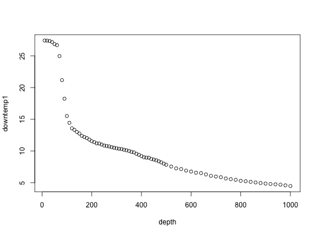

Data for Exercise 2.9
A data frame with 75 observations on the following 12 variables.
Kitchens, L. J. (2003) Basic Statistics and Data Analysis. Duxbury
str(Ronbrown1)#> 'data.frame': 75 obs. of 12 variables: #> $ depth : int 10 20 30 40 50 60 70 80 90 100 ... #> $ downtemp1 : num 27.4 27.4 27.3 27.2 26.8 ... #> $ downtemp2 : num 27.4 27.4 27.3 27.2 26.8 ... #> $ downsalinity1: num 33.3 33.3 33.3 33.3 33.4 ... #> $ downsalinity2: num 33.3 33.3 33.3 33.3 33.4 ... #> $ downdensity : num 21.3 21.3 21.3 21.4 21.6 ... #> $ C7 : int 10 20 30 40 50 60 70 80 90 100 ... #> $ uptemp1 : num 27.5 27.4 27.3 27.1 26.8 ... #> $ uptemp2 : num 27.5 27.4 27.3 27.1 26.8 ... #> $ upsalinity1 : num 33.3 33.3 33.3 33.4 33.5 ... #> $ upsalinity2 : num 33.3 33.3 33.3 33.4 33.5 ... #> $ updensity : num 21.3 21.3 21.3 21.5 21.6 ... #>attach(Ronbrown1) plot(depth,downtemp1)detach(Ronbrown1)